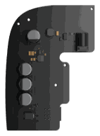
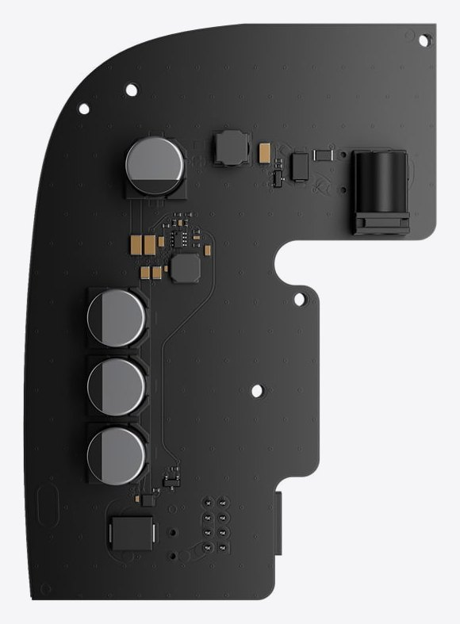
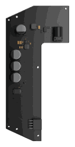
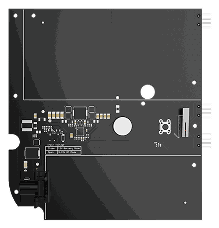

Visuel officiel non disponible

12-24V PSU (type A)
Réf. fabricant 24V.H2R2.Y · Unités d'alimentation · Ajax Systems, marque partenaire
Sur devisÉtude, fourniture et installation par Active Sécurité 974
12-24V PSU (type A) : bloc d'alimentation pour le fonctionnement du dispositif à partir d'une source d'alimentation basse tension. Matériel Ajax Systems sélectionné, installé et paramétré chez vous par Active Sécurité 974, partout à La Réunion.
Coloris
Sans objet pour cette référence.
- Étude et devis gratuits, sans engagement
- Installation chez vous, partout à La Réunion
- Partenaire agréé Ajax Systems
Caractéristiques
En bref.
Données issues de la fiche officielle du fabricant, reformulées. Fiche constructeur (nouvel onglet)
| Modèle | 12-24V PSU (type A) |
|---|---|
| Référence fabricant | 24V.H2R2.Y |
| Gamme | Baseline |
| Type | Unités d'alimentation |
| Points clés |
|
| Coloris officiels | À préciser lors du devis |
| Prix | Sur devis |
| Disponibilité | À confirmer lors du devis |
Dans la même famille
Autres produits.


